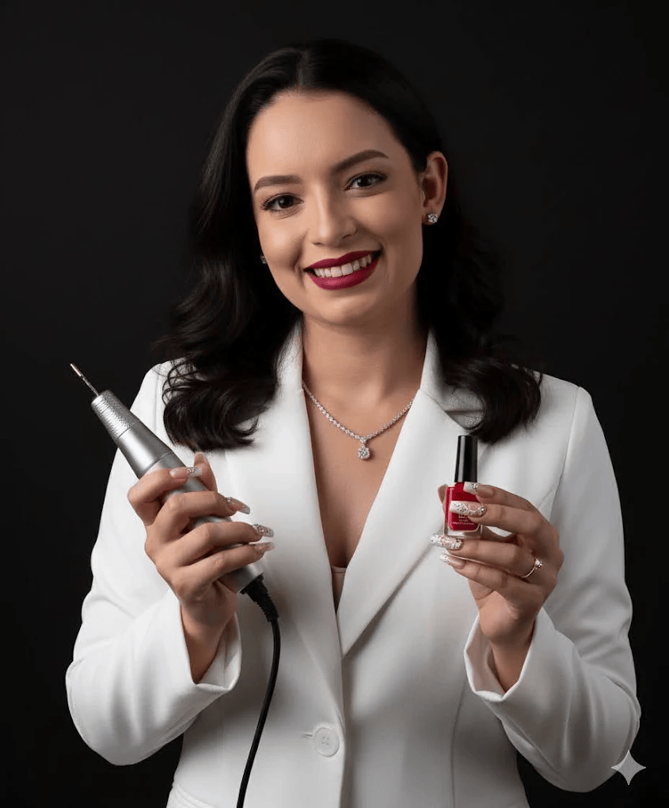

Experiência
3 anos de dedicação e experiência na área da beleza.
BEAUTY STUDIO KÁTIA SOUZA
Um espaço pensado para valorizar sua beleza e proporcionar momentos especiais de autocuidado.

NOSSA HISTÓRIA
O Beauty Studio Kátia Souza nasceu do carinho pela beleza, do cuidado com cada detalhe e da dedicação em proporcionar momentos especiais para cada cliente.
À frente do estúdio está Kátia Souza, profissional da área da beleza com 3 anos de experiência, que busca constantemente aprimorar suas técnicas e conhecimentos por meio de cursos e certificações de especialização.
Cada atendimento é realizado com atenção, delicadeza e dedicação, respeitando o estilo e as preferências de cada cliente.
Nosso compromisso é oferecer uma experiência acolhedora, valorizando a beleza e a autoestima por meio de um trabalho cuidadoso e personalizado.
NOSSO COMPROMISSO
3 anos de dedicação e experiência na área da beleza.
Aprimoramento constante por meio de cursos e certificações.
Atenção às preferências e necessidades de cada cliente.
A OPINIÃO DE QUEM NOS VISITA
30 avaliações no Google
As avaliações destacam o atendimento atencioso, o capricho nos serviços, a atenção aos detalhes e o cuidado com cada cliente.
Ver avaliações no GoogleReserve seu momento de autocuidado no Beauty Studio Kátia Souza.
Agendar meu horário